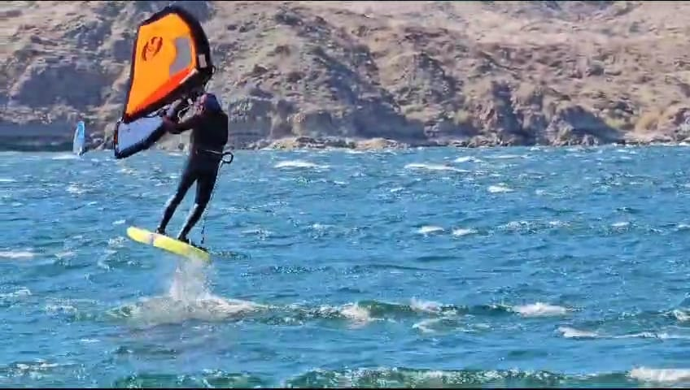

Since the early eighties I started developing a passion for water soprts, especially Windsurfing.
Then I got married in 1990 and family and kids took over while we lived in Colombia and later in 2000 we moved to U.S.A.
Once in the USA, we focused a lot on another sport of my childhood dreams: snow skiing. That kept us busy until the year 2008, after my wife completed her Registered Nurse program, I decided to go back to my windsurfing days, after almost 16 years break.
I windsurfed non-stop from 2008 until 2022 when I tried Wingfoiling for the first time and I got hooked right away
The windsurfing days went decrasing to give way to this new thrilling adventure of Wingfoiling and I have not stopped ever since.
Wingfoiling in action